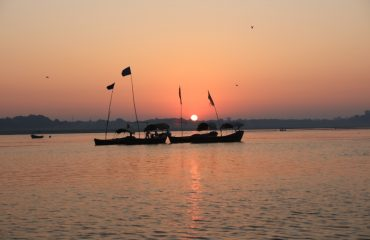
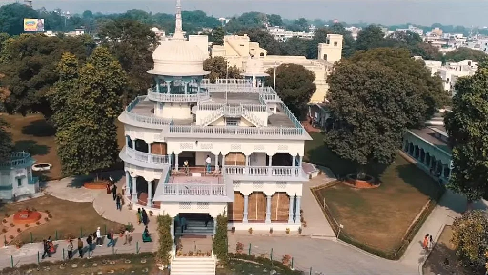
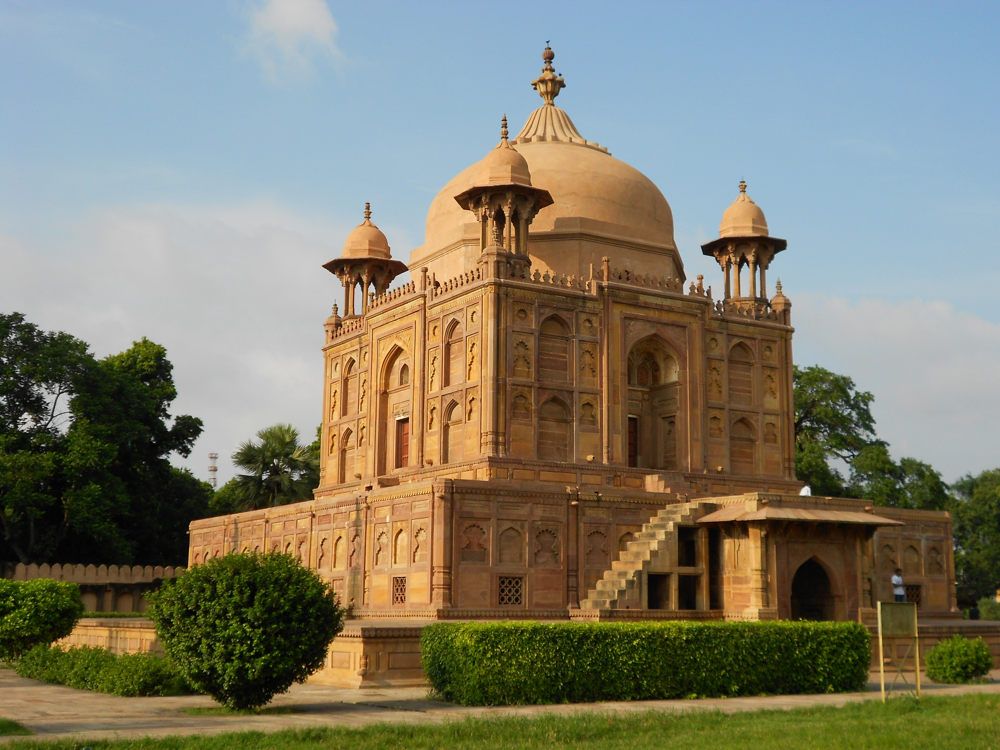

PRAYAGRAJ
Prayagraj, also called Prayag, formerly Allahabad or Ilāhābād, city, southern Uttar Pradesh state, northern India. It is situated at the confluence of the Ganges (Ganga) and Yamuna (Jumna) rivers, about 65 miles (100 km) west-northwest of Varanasi (Benares).Prayagraj stands on the site of ancient Prayag, a holy city that was comparable in fame to Varanasi and Haridwar. Prayag’s importance in the ancient Buddhist period of Indian history is attested by the inscriptions on a pillar attributed to the 3rd-century-BCE Mauryan emperor Ashoka. The pillar—which is believed to have been erected in a nearby locality and moved to Prayagraj in Mughal times—still stands inside the gateway to the old Prayagraj fort, which is situated strategically at the confluence of the two rivers. The site’s religious importance to Hinduism persists. Each year a festival takes place at the rivers’ confluence, and every 12th year a much larger festival, Kumbh Mela, is attended by millions of devotees.

SANGAM

ANAND BHAVAN

KHUSRO BAGH